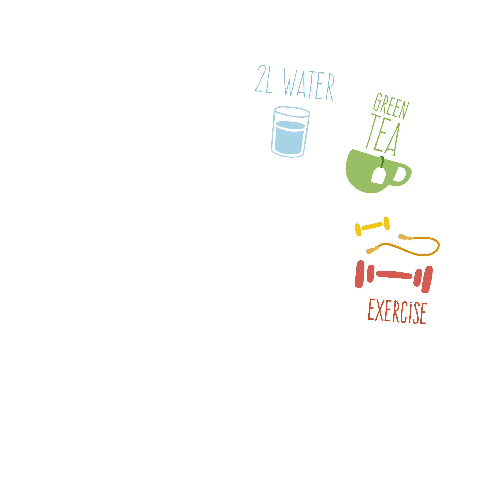

Recipe for Students: a recipe for you to cook a relaxing and interesting Saturday life. Learn about how to
enjoying a day with
oneself, so follow this recipe and cook a richful day for yourself!
Ingredients
Instructions
Time: 10hours

1 piece of phone
2 slices of bread and 1 apple
1 cup of music
1 computer
½ sheets of homework
1 bowl of noodles
1 piece of Ipad with 1 piece of Apple pencil
¾ cup of movie on Netflix
1 roll of yoga mat
1 bowl of rice with stired-fired chick
¼ tablespoons of book
1 bed with 1 warm quilt and 1 soft pillow
Let's start! Wake up in the morning around 10:30 am, open the phone and take a look at the unread
messages and social media for about 30 minutes.
Wash your face and brush your teeth for 10 minutes, when you look nice and clean, go to the refrigerator
grab 2 slices of bread and 1 apple, chew your breakfast slowly for about 10 minutes!
Open the computer, play a quiet song, and start doing the homework, slowly and carefully, spend about 2
hours
until the homework is perfectly down.
Cook a bowl of noodles for yourself, pour a pot of water, heat up when the water is boiling, put noodles
inside the pot. After 2 minutes, add an egg and cook for 1 more minute.
Open the Ipad and start a movie, sit down and eat your lunch for about 30 minutes.
Wait until around 4:00 pm, take out a yoga mat and do some exercise for 1 hour.
Find a pan and stir-fry the cutted chicken for 6 minutes. Put rice in the rice cooker for 25 minutes.
Serve them in the bowl for your dinner, eat 30 minutes with the unfinished movie.
Spend about an hour reading a book to relax your mind.
Take a bath and get into bed be prepared to sleep. Cover yourself with the quilt and lie down on your
pillow.